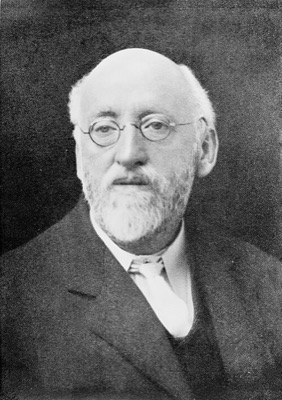
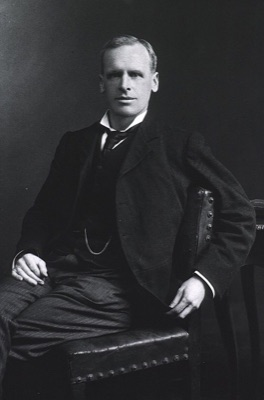

身体と脳
腹の中に、もう一つの神経系がある。五億個の神経細胞が、脳とは独立に思考し、脳より先に感じている。
M.D. Gershon 著『The Second Brain』が出版され、「第二の脳」という言葉が学界の外へ。
同年の世界：Google がスタンフォードのガレージで誕生／Windows 98 発売／サッカーW杯フランス優勝。
腸管神経系の研究自体は1899年のベイリス＆スターリングまで遡る。だが「脳と対等な器官」として語られるようになったのは、ほんの四半世紀前だ。
大事なプレゼンの前。頭では「準備はしてきた、大丈夫だ」と言い聞かせているのに、胃のあたりがぎゅっと縮む。コーヒーが今朝から飲めない。手は冷たい。
あるいは逆に、初めて会ったはずの人を前にして、なぜか「この話は進めちゃいけない」と腹のどこかが告げる。根拠はない。ただ、そう「感じる」。
その感覚は、脳から腹へ降りてきた命令ではない。腹から脳へ、先に届いていた信号だ。
身体の末端にあると思われていた器官が、独自の神経系と化学工場を抱え、脳と対等に対話している。その事実が、私たちが日々「決断」と呼んでいるものの輪郭を、少しずらす。
脳と脊髄、そしてそこから伸びる末梢神経。これが神経系のすべてだと、長らく教科書は教えてきた。だが実のところ、私たちの腹の中には、ほとんど独立した第三の神経網がもう一つ通っている。食道から直腸まで、消化管の壁に貼り付くようにして張り巡らされた、腸管神経系腸管神経系（Enteric Nervous System / ENS）消化管の壁のなかに埋め込まれている神経のネットワーク。脳や脊髄と繋がってはいるが、その接続を全部切っても、消化の基本動作は止まらずに自分だけで動き続ける。と呼ばれる網である。
この網は、脳や脊髄と繋がってはいる。だが面白いのは、繋がりをすべて切っても動き続けることだ。摘出した腸の切片を栄養液に浸し、神経の束をすべて切断しても、腸は独力で収縮の波を打ち続ける。食べ物が来れば押し出し、異物が来れば拒絶する。中枢からの指令を一切待たずに、である。
この「独立性」を初めて実験室で示したのが、ロンドン大学の二人の生理学者、ウィリアム・ベイリスとアーネスト・スターリングだった。1899年、彼らは麻酔した犬の腸をひと区切り摘出し、中央に圧をかけた。すると、圧迫点より口側では筋肉が収縮し、肛門側では弛緩するという、極めて整然とした反射が起きる。中枢神経を一切経由しない反射だ。彼らはこれを「腸の法則（Law of the Intestine）」と呼んだ。

イギリスの生理学者。スターリングとの共同研究で、腸が中枢神経なしに自律的に運動することを示した「腸の法則」を1899年に発表。後にホルモン概念の発見にも関与する。

ベイリスの義弟であり共同研究者。1902年にセクレチンを発見し「ホルモン」という語を提唱。心臓の機能法則にも名を残すが、このページでは腸の法則の共著者として登場する。
彼らが覗き込んだ腸の壁には、肉眼では見えない二層のネットワークが走っていた。粘膜の直下には、栄養の吸収や分泌を調節するマイスナー叢（粘膜下神経叢）。その外側、筋肉の層の間には、蠕動蠕動（Peristalsis）消化管の筋肉が波のように次々と収縮し、内容物を一方向へ押し流していく運動。腸管神経系が中枢の指示なしに駆動しており、脳との接続を切っても止まらない。運動そのものを駆動するアウエルバッハ叢（筋層間神経叢）。この二つの神経網が、腸管を端から端まで覆っている。
この二層は、単なる配線ではない。記憶も学習もする。繰り返し同じ食物が通過すれば、蠕動の強さや速度を調整する。腸炎を起こせば過敏さを増し、治ってもその痕跡を残す。脳の神経細胞とほぼ同じ種類の神経伝達物質を、同じ方式で使っている。違うのは配置だけだ。
だから、腹の中には脳の出張所があるのではない。もう一つの脳がある。——こう言い切ったのが、1998年にコロンビア大学の解剖学者マイケル・ガーション（Michael D. Gershon）が出版した一般向け書籍『The Second Brain』だった。タイトルはやがて一人歩きし、メディアを通じて広く浸透した。
"The gut has a mind of its own, the enteric nervous system. Just like the larger brain in the head, researchers say, this system sends and receives impulses, records experiences and responds to emotions."
腸には腸独自の心がある。それが腸管神経系だ。頭の中の大きな脳と同じように、このシステムは信号を送受信し、経験を記録し、感情に応答する。
— Michael D. Gershon『The Second Brain』(1998) — および彼の New York Times 寄稿の要約から
コロンビア大学の解剖学者。「神経消化器病学の父」と呼ばれ、1960年代から腸のセロトニン生成と腸管神経系の自律性を研究してきた。1998年の著書『The Second Brain』で、それまで専門家だけのものだった知見を世に広めた。
だが、この広まり方には副作用もあった。「腸こそ真の脳」「腸活で幸福になる」といった単純化が流通し、その結果、本当のメカニズムがかえって見えにくくなっている面もある。本題に入る前に、よくある誤解を先に潰しておきたい。
よくある誤解
腸内環境を整えれば、幸福ホルモンであるセロトニンが増えて気分が良くなる。
実際は
体内のセロトニンの約9割は腸で作られる。しかしそれは血液脳関門を越えられない。気分への影響は、迷走神経や免疫・内分泌を経由した間接的な経路で起きる。
よくある誤解
「第二の脳」があるなら、頭の脳と同じように考えたり判断したりしている。
実際は
腸管神経系に意識や言語はない。するのは消化の自律制御と、状態を脳へ送ることだけ。「第二の脳」は比喩で、構造の相似を指す。
よくある誤解
プロバイオティクスを摂れば、性格や不安が目に見えて変わる。
実際は
動物実験では顕著な行動変化が確認されているが、人間での二重盲検RCTはまだ限定的。効果量は小さく、個人差が大きい。
「もう一つの脳」という比喩が成立するのは、規模の問題でもある。頭蓋骨の中の脳には、およそ860億個の神経細胞がある。では、腸管神経系には？
この数字は、文献によって一億から六億まで振れる。腸が長く、神経が均等に分布していないことに加え、「神経細胞」の定義を厳密にとるか広くとるかで桁が変わるからだ。だが、どの見積もりを取っても、共通して言えることが一つある。脊髄よりは多い。つまり、身体の内側に走る神経の総量としては、腸の方が脊髄を上回る。
あなたの腸管神経系には、だいたいどれくらいの神経細胞があると思うか？
数字の振れ幅が大きいが、代表的な数値を採った比較。脳には遠く及ばない。だが脊髄を上回り、ネコの脳全体に匹敵する規模の神経網が、私たちの腹の中に走っている。
| 脳 | 脊髄 | 腸管神経系 | |
|---|---|---|---|
| ニューロン数 | 約 860億 | 約 1億 | 約 1〜6億 |
| 中枢からの独立性 | — | 反射は独立可 | 接続を切っても機能 |
| 使う神経伝達物質 | 30種以上 | 主要なもののみ | 30種以上（脳とほぼ同じ） |
| 主な役割 | 知覚・思考・運動 | 反射・信号中継 | 消化管の自律制御 |
なぜ消化のために、これほど大量の神経が必要なのか？ 答えは、腸が置かれている環境の過酷さにある。腸の内側は、名目上は「体の中」だが、実質的には外界と接している。そこには毎日、病原体と毒物と未知の化学物質が流れ込んでくる。中枢からの指示を待っていては、生体はもたない。だから腸は、自分の判断で押し出したり、吸収したり、拒絶したりしなければならない。そのための神経網だ。
腸管神経系が独立している、と言っても、脳とまったく切れているわけではない。両者の間には迷走神経迷走神経（Vagus Nerve）首から腹まで伸びる、人体で最も長い脳神経。心臓・肺・胃・腸と脳をつなぎ、呼吸や消化、心拍の無意識的な制御を担う。「迷走」の名は、走り方が複雑で行き先を辿りにくいことに由来する。という太い情報路が通っている。首を下りて、心臓と肺の裏を通り、胃と腸まで這うように届く、人体で最も長い脳神経だ。
多くの人はこの神経を、脳が腸に指示を出すためのケーブルだと思っている。緊張すれば胃が縮む。怒れば腹が立つ。確かにそういう方向の信号もある。だが、実際の神経線維の内訳はそうではない。下のビジュアライザーで、方向別の信号量を眺めてみてほしい。
迷走神経の線維構成の代表値（Bonaz et al., 2018 ほか）に基づく概念的な可視化。実際の信号は電気パルスで、粒子として流れているわけではない。比率の体感のために粒子密度を誇張している。
配線の8割は腸から脳へ上る方向に使われている。脳から腸への下りは、たった2割。つまり、迷走神経というケーブルは、主に腸が脳に語りかけるためにある。「腹が告げる」「腑に落ちる」は、解剖学的に見れば、的外れな比喩ではない。
では、その上り2割の「脳からの指示」は、腸にとってどれほど必須なのか。次のシミュレーターで確かめてほしい。腸管を横から見た図の中で、筋肉の波が食物の塊を左から右へ押し流している。これが蠕動運動だ。
3つのボタンを試してみる。どれを押しても、波は止まらない。
迷走神経を切ってみる。 それでも波は進む。脳から切り離された腸管も、自分の神経網だけで収縮のリズムを生成し続ける。これが「第二の脳」という言葉の本義だ。
蠕動は実際には輪走筋の収縮波で駆動される。簡略化して管の太さの変化として可視化している。ストレス下で下痢傾向になるのは、ここで見せているような速度上昇が原因の一つ。
腸から脳へ信号が上がる経路は、一本ではない。大きく三つに分かれる。どれも同じ「腸の状態」という情報源から始まるのに、全く異なる速度と持続時間で脳に届く。
三つの上行経路
最速の経路。腸管の壁にある感覚ニューロンが、食物の量、pH、特定の代謝物を検出し、迷走神経を通じて数秒以内に脳幹へ伝える。
日常の例でいえば、冷たい飲み物を一気飲みしたときに胸の奥がすぐ反応するあの感覚。あれは迷走神経経由の即時フィードバックだ。「胃に悪そう」と脳が判断する前に、身体がすでに知っている。
腸壁には、ホルモンを分泌する内分泌細胞が点在する。代表がクロム親和細胞クロム親和細胞（Enterochromaffin Cell / EC細胞）腸の粘膜上皮に散らばる、セロトニンを合成・貯蔵する細胞。食物や細菌由来の信号を受けて、セロトニンを血液中や周辺の神経終末に放出する。で、体内のセロトニンの約9割をここで作っている。食べ物や腸内細菌由来の代謝物が引き金になり、血中やその場の神経終末にセロトニンを放つ。
食後に眠くなるのも、空腹で集中できないのも、この経路の働きが大きい。ただし、ここで作られたセロトニンは脳には届かない。血液脳関門が遮断するからだ。脳に影響するのは、別経路で迷走神経がこれを検出して信号を送るからである。
最も遅いが、最も根深い経路。腸内細菌が食物繊維を発酵させて作る短鎖脂肪酸短鎖脂肪酸（Short-Chain Fatty Acid / SCFA）腸内細菌が食物繊維を分解する過程でつくる小さな脂肪分子。酪酸・酢酸・プロピオン酸が代表で、腸壁のエネルギー源になるだけでなく、血流に乗って全身に作用する。（酪酸・酢酸・プロピオン酸）や、細菌自体が出す微量な神経活性物質が、腸壁の免疫細胞や血流を通して全身に回り、最終的に脳の炎症状態や神経伝達に影響する。
食生活を変えて数週間後に、気分の底がゆっくり上がる（あるいは下がる）——という経験は、この経路が主役だ。「腸活」が効くとすれば、多くはここで効いている。ただし効果量は個人差が大きく、一律ではない。
同じ「腸の状態」が、三つの速度で脳に届く
三つの経路は、独立しているようで相互に影響する。例えば、免疫経路で慢性的な軽い炎症が続くと、迷走神経の感度が変化し、同じ食物刺激に対して以前より強い信号が上がるようになる。いわば、腸の側の「聴覚」が鋭敏化する。気分障害や過敏性腸症候群の多くは、この三経路のどこかの小さな歪みが長引いた結果であるらしい、というのが現時点の見立てだ。
下のタイムラインで、● は腸脳相関研究そのものの核となる出来事、○ はその周辺で起きた関連事象だ。
1899
腸の法則（Law of the Intestine）
ベイリスとスターリングが、摘出した犬の腸が中枢神経なしで反射することを示す。腸管神経系の自律性の最初の証明。
1921
神経伝達の化学的性質の発見
オットー・レーヴィが、迷走神経刺激で放たれる化学物質（後のアセチルコリン）を発見。のちのノーベル賞。腸と脳の「言語」が同じ化学式であることが示される。
1996
Gershon が "second brain" を命名
ガーションが論文と講演で「第二の脳」という言い回しを使い始める。専門用語ではないが、強い比喩として広がっていく。
1998
『The Second Brain』出版
一般向け書籍として刊行。腸管神経系研究が学界の外に抜け出す。同年、Google がスタンフォードのガレージで起業。
2004
無菌マウスのストレス応答研究
九州大学の須藤信行らが、腸内細菌を持たない無菌マウス無菌マウス（Germ-Free Mouse）帝王切開で取り出し、徹底的に殺菌された環境で育てた、腸にも皮膚にも細菌が一切いないマウス。腸内細菌の役割を調べる実験に使われる。が通常マウスに比べ、ストレスホルモンの分泌量が約2倍に増えることを示す。細菌叢が脳の反応に影響する、最初の明確な証拠。
2013
"Psychobiotics" という造語
アイルランドの精神医学者クライアンらが、精神的健康に関わる細菌を指す造語を提唱。腸内細菌と気分・行動を結ぶ研究分野の旗印になる。
2016
パーキンソン病と腸の関係
パーキンソン病の原因とされるαシヌクレインαシヌクレイン（α-synuclein）神経細胞のシナプスに存在する小さなタンパク質。健康なときは神経伝達の補助役だが、異常な形に折れ畳まれると凝集してパーキンソン病などの神経変性疾患の原因になる。の凝集が、腸管神経系で先に始まり、迷走神経を伝って脳へ上行している可能性を示す研究が相次ぐ。迷走神経切断者がパーキンソン病リスクが低いという疫学所見も報告される。
ここまで来て、冒頭の場面に戻ってみる。プレゼン前に胃が縮む。初対面の相手に腹が違和感を覚える。それらは、単に「脳が不安になって身体に症状が出た」のではない。むしろ腸の状態が先にあり、その信号が脳の判断を色付けている可能性が高い。あなたが「不安だ」と意識するその瞬間、迷走神経の8割は腸から脳へ向かって走っていたからだ。
ここで一つ、落とし穴になりがちな問いを出しておきたい。次の四つのうち、体内での約9割が腸で作られるのはどれだろうか。
体内のおよそ9割が腸で作られている物質はどれか？
答えはセロトニンだ。ここで思考停止すると、「腸活でセロトニンを増やせば幸せになる」という短絡が生まれる。だが先に書いたとおり、腸で作られたセロトニンは脳に届かない。血液脳関門が分子を遮断する。脳と腸はそれぞれ独自のセロトニン・プールを持ち、機能的にも別物だ。腸が脳の気分に影響するのは、あくまで迷走神経と免疫と代謝を経由した間接的な経路で、である。
"The microbiome-gut-brain axis is a bidirectional communication system — but we have only just begun to decipher its language."
微生物叢-腸-脳の軸は双方向の通信系だ。だがその言語の解読は、ようやく始まったばかりである。
— John F. Cryan et al., "The Microbiota-Gut-Brain Axis", Physiological Reviews (2019)
だからこの記事の結論は、単純化できない。「腹の判断を信じろ」でもない。「すべては脳が決めている」でもない。そのどちらでもなく、判断という現象は、脳と腸の絶え間ない対話の中で立ち上がっている——というだけのことだ。脳は司令塔ではなく、腹からの連絡を統合して一つの「気分」や「直感」を形にしている編集者に近い。
文化と言語への沈殿
日本語の「腹」「腸」
「腹を決める」「腑に落ちる」「腹が立つ」「はらわたが煮えくり返る」「腹蔵なく話す」——決意・納得・怒り・本音。意思と感情のほぼ全域が、なぜか腹の語彙で語られてきた。
英語の "gut feeling"
直感を "gut feeling"（腹の感覚）と呼ぶ。緊張を "butterflies in the stomach"（胃の中の蝶々）と表現する。後者の初出は1908年のフローレンス・コンヴァース『祈りの家』だとされる。身体が先に知っている、という感覚は、英語圏にも深く根付いている。
『インサイド・ヘッド』と「身体化した感情」
ピクサー映画『インサイド・ヘッド2』(2024) で、不安というキャラクターは「身体全体で反応する」存在として描かれた。脳の中の司令室に閉じ込められた感情、というメタファーは、腸脳相関の知見とどこまで両立するか。鑑賞の視点が一つ増える。
だとしたら、自分の「決断」との付き合い方も少し変わるかもしれない。重要な判断の前に胃が縮んだら、それを無視しない。それは心理ではなく生理の信号で、脳よりも先に何かを検出していることが多い。逆に、食生活が乱れて気分が底で続くなら、それを「性格」や「気合」の問題にしない。腸が発している信号が、気分を色付けている可能性を先に考える。身体は、脳の操り人形ではない。脳と対話している相手だ。
The enteric nervous system: a second brain
ガーション自身が一般臨床医向けに書いた総説。書籍『The Second Brain』の濃縮版として読める。歴史的な位置づけを知る出発点として、最初にここから入るのが素直。
The movements and innervation of the small intestine
「腸の法則」が世に出た原論文。100年以上前の実験記述だが、読んでみると驚くほどクリアで、現代の神経生理学の文章体がここにほぼ完成していることが分かる。
九州大の須藤らによる、無菌マウスが通常マウスの2倍のストレスホルモンを出すことを示した研究。腸内細菌と脳のつながりを最初に実証した記念碑的論文。現在の腸脳相関ブームの源流はここにある。
この分野の現時点での「正典」。200ページ超の大規模な総説で、神経・内分泌・免疫の三経路をフラットに整理している。流通している「腸活」言説の過不足を見極めたい読者には、先にこれを一章だけでも読むのを薦めたい。
画像クレジット: William Bayliss 肖像 — Wellcome Collection, CC BY 4.0(リサイズ) ／ Ernest Starling 肖像 — Images from the History of Medicine (NLM), Public Domain.